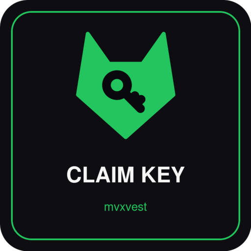
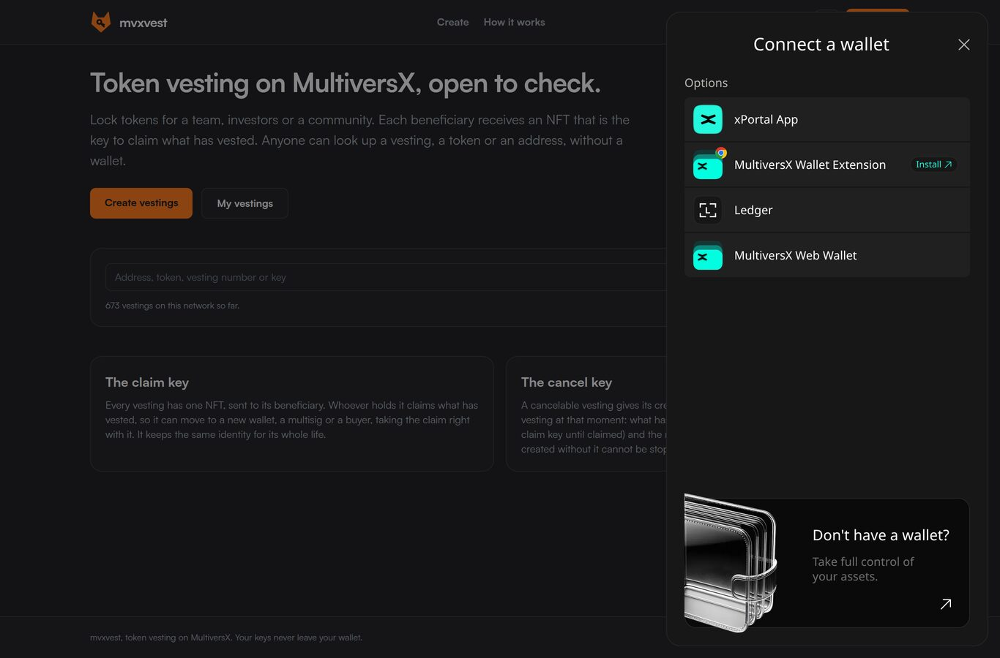
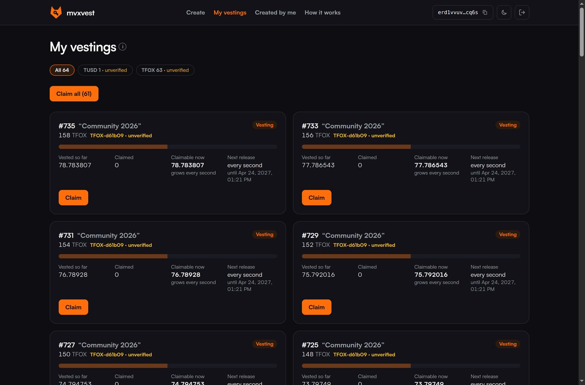
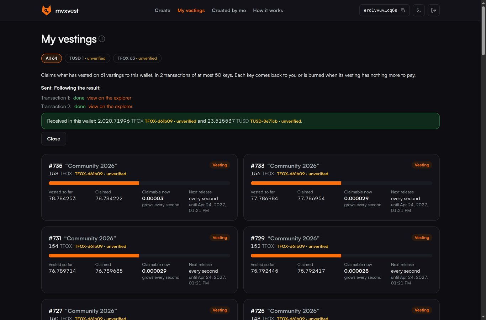

A short guide for the beneficiaries of a vesting

Someone locked tokens for you in a vesting. They unlock over time. You collect what has unlocked whenever you like.
Your wallet holds the vesting's claim key: an NFT called Vesting #… claim key, like the one on the left. Whoever holds it can claim.
Your part takes about a minute. It is the same every time.


